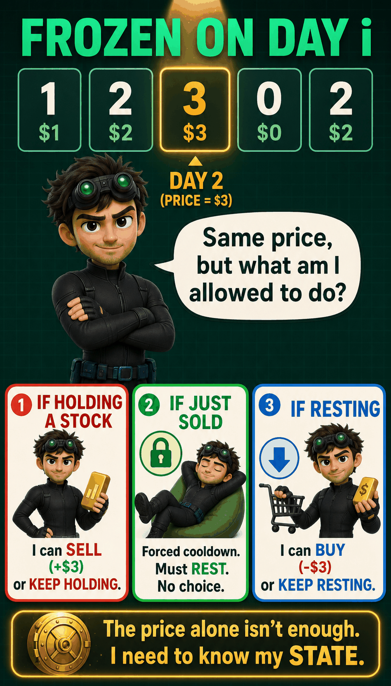
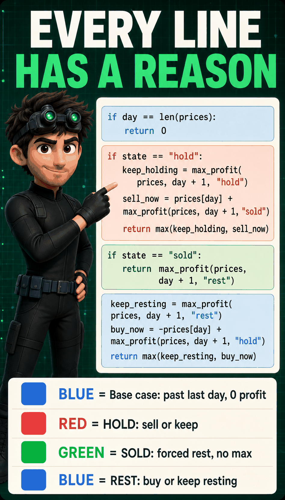
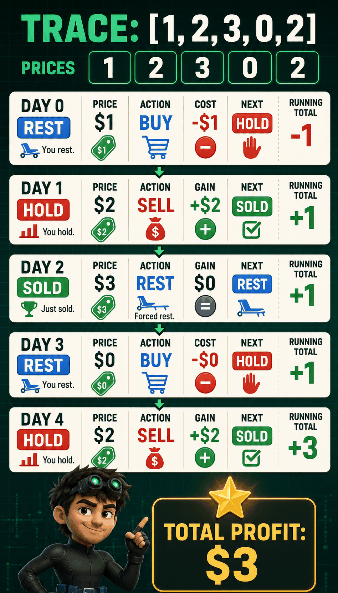
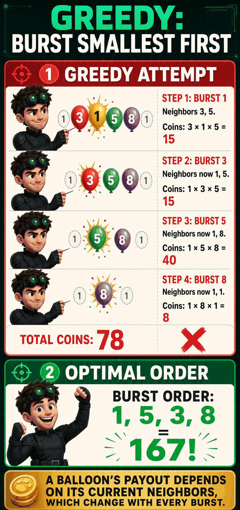
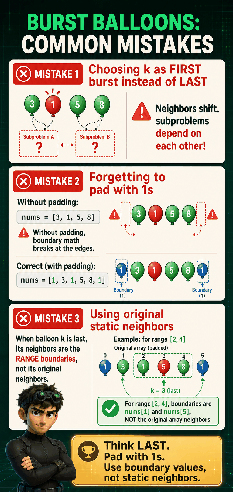

The Problem
Best Time to Buy and Sell Stock with Cooldown (LeetCode #309)
Given daily stock prices, maximize profit with unlimited transactions. Must buy before selling, and must cooldown 1 day after every sale.
prices = [1, 2, 3, 0, 2]
[1, 2, 3, 0, 2] → 3
Buy@1, sell@2, cooldown, buy@0, sell@2.
[1] → 0
One day, no sell is possible.
[1, 2] → 1
Buy@1, sell@2. No time for a second trade.
[7, 6, 4, 3, 1] → 0
Strictly falling. Every trade loses money, so do nothing.
[1, 4, 2] → 3
Buy@1, sell@4. The cooldown never even matters here.
1 What Is It Really Asking?
Three rules stack on top of each other: own at most one share at a time, wait one full day after a sale before buying again, and trade as many times as helpful.
Buy/sell as many times as profitable, not just once.
After selling, day i+1 must be idle. Can't buy until i+2.
2 What Would I Naturally Try?
Instinct: buy at every local minimum, sell at every local maximum.
3 Where Does That Fail?
![Greedy buy-low-sell-high works without cooldown but fails on [1,2,3,0,2]: selling at the peak blocks the very next legal buy](dp/images/stock_greedy.png)
4 What Decision Am I Stuck On?
Freeze on day day. Before I can decide anything, I need one more fact: am I currently holding a stock, just sold, or free to act? Same day, same price, three completely different legal moves.

5 What Can I Do From Here?
Three situations, three answer sets:

6 Why Only These Choices?

7 Watch Each Choice Play Out
Optimal path through prices = [1, 2, 3, 0, 2]:
8 What Must I Remember? (The State)
9 What Do the Variables Mean?
Before day: decided, locked in. From day onward: still to be solved.
What I'm allowed to do starting today: hold→sell/keep, sold→rest only, rest→buy/keep.
10 What Does the Function Promise?
Original problem: max_profit(0, rest) (day 0, no stock, no cooldown owed).
11 When Must We Stop? (Base Cases)
When day == len(prices), there are no more days to act on. No matter the state, nothing more can be gained.
12 What Smaller Problem Remains? (Transitions)
prices[day] + max_profit(day+1, sold), or keep → max_profit(day+1, hold).
max_profit(day+1, rest). No choice, no price change.
-prices[day] + max_profit(day+1, hold), or keep resting → max_profit(day+1, rest).

13 How Do We Combine the Results?
The problem says maximize profit. Whenever a state has two legal moves, take max() of both futures.
14 The Recurrence
┌ 0 if day == len(prices)
hold_profit(day) = │ max(hold_profit(day+1), prices[day] + sold_profit(day+1)) otherwise
┌ 0 if day == len(prices)
sold_profit(day) = │ rest_profit(day+1) otherwise
┌ 0 if day == len(prices)
rest_profit(day) = │ max(rest_profit(day+1), -prices[day] + hold_profit(day+1)) otherwiseAnswer: rest_profit(0).
15 Brute-Force Code
def max_profit(prices, day, state):
if day == len(prices):
return 0
if state == "hold":
keep_holding = max_profit(prices, day + 1, "hold")
sell_now = prices[day] + max_profit(prices, day + 1, "sold")
return max(keep_holding, sell_now)
if state == "sold":
return max_profit(prices, day + 1, "rest")
keep_resting = max_profit(prices, day + 1, "rest")
buy_now = -prices[day] + max_profit(prices, day + 1, "hold")
return max(keep_resting, buy_now)
max_profit(prices, 0, "rest")16 Why Every Line Exists
if day == len(prices): return 0if state == "hold": ...if state == "sold": ...keep_resting / buy_now
17 Concrete Execution Trace
Trace max_profit(prices, 0, "rest") on [1, 2, 3, 0, 2]. Every call resolves down to base cases returning 0, then the max()s and price adjustments build the answer back up to 3.

18 Why Is It Slow?
Every call branches into up to 2 children, and different buy/sell/wait sequences land on the exact same (day, state) pair. Recomputed every time, causing exponential blowup without caching.
19 Memoization
Cache key: (day, state). At most 3 × len(prices) entries.
def max_profit(prices, day, state, cache):
if day == len(prices):
return 0
if (day, state) in cache:
return cache[(day, state)]
if state == "hold":
result = max(max_profit(prices, day + 1, "hold", cache),
prices[day] + max_profit(prices, day + 1, "sold", cache))
elif state == "sold":
result = max_profit(prices, day + 1, "rest", cache)
else:
result = max(max_profit(prices, day + 1, "rest", cache),
-prices[day] + max_profit(prices, day + 1, "hold", cache))
cache[(day, state)] = result
return result
20 Tabulation
3 states → 3 parallel arrays instead of one grid: hold_profit[day], sold_profit[day], rest_profit[day], filled forward from day 0.
def max_profit(prices):
n = len(prices)
hold_profit = [0] * n
sold_profit = [0] * n
rest_profit = [0] * n
hold_profit[0] = -prices[0]
for day in range(1, n):
hold_profit[day] = max(hold_profit[day - 1], rest_profit[day - 1] - prices[day])
sold_profit[day] = hold_profit[day - 1] + prices[day]
rest_profit[day] = max(rest_profit[day - 1], sold_profit[day - 1])
return max(sold_profit[n - 1], rest_profit[n - 1])hold_profit[0] = -prices[0]hold_profit[day]sold_profit[day]rest_profit[day]return max(sold, rest)
21 Space Optimization
Each day only reads yesterday's 3 values. Drop the arrays for 3 rolling variables: O(n) → O(1) space.
def max_profit(prices):
hold_profit, sold_profit, rest_profit = -prices[0], 0, 0
for day in range(1, len(prices)):
prev_hold, prev_sold, prev_rest = hold_profit, sold_profit, rest_profit
hold_profit = max(prev_hold, prev_rest - prices[day])
sold_profit = prev_hold + prices[day]
rest_profit = max(prev_rest, prev_sold)
return max(sold_profit, rest_profit)22 Common Mistakes
Collapses cooldown away. Selling would let you rebuy the very next day.
max(rest_profit(day+1), ...) in the SOLD branch ← wrong. SOLD has exactly one legal move.
hold_profit[0] = 0 instead of -prices[0] ← wrong. Buying on day 0 costs money immediately.

23 Pattern Recognition
24 Rediscover It Six Months Later
The State Machine Family
Constraints create discrete states (HOLD, SOLD, REST). Each state's legal moves become the transitions.
1 Longest Increasing Subsequence
▶Longest Increasing Subsequence (LeetCode #300)
Given an integer array nums, return the length of the longest strictly increasing subsequence.
nums = [10, 9, 2, 5, 3, 7, 101, 18][0, 1, 0, 3, 2, 3] → 4[7, 7, 7, 7] → 1 (strictly increasing, equal doesn't extend)1 What Is It Really Asking?
A subsequence keeps the original order but can skip elements freely. We only need the length, not the actual chain, and each step must be strictly greater than the last.
2 What Would I Naturally Try?
Scan left to right, keep the first number, and keep any later number bigger than the last one kept.
3 Where Does That Fail?

4 What Decision Am I Stuck On?
Freeze on element nums[i], mid-array. Should it be included in the chain ending here, or skipped?
![Frozen at index i in the array: include nums[i] in the chain, or skip it?](dp/images/lis_frozen.png)
5 What Can I Do With This ONE Element?
Standing at index i, building the longest chain that ends exactly here.
j with nums[j] < nums[i], append nums[i] to that chain.
6 Why Only These Choices?
i are decided.7 Watch Each Choice Play Out
nums = [1, 3, 2]. At index 2 (value 2): j=0 (value 1) qualifies, j=1 (value 3) does not.

8 What Must I Remember? (The State)
Only the index i matters, since nums[i] is fixed by it and that value is what constrains every future extension.
9 What Do the Variables Mean?
i: index the chain currently ends at.j (previous): candidate earlier index being tested as the chain's second-to-last element.10 What Does the Function Promise?
The final answer is max over every i, since the true LIS can end anywhere.
11 When Must We Stop? (Base Cases)
nums[i] alone is a chain. Return 1.
12 What Smaller Problem Remains? (Transitions)
For every previous in range(i) where nums[previous] < nums[i]: the remaining subproblem is longest_ending_at(previous), plus 1 for nums[i] itself.
13 How Do We Combine Futures?
The word is "longest": take the biggest of every valid extension, not their sum.
max().14 The Recurrence
┌ 1 if no previous < i with nums[previous] < nums[i]
longest_ending_at(i) =│ max(1 + longest_ending_at(previous)) over previous < i with nums[previous] < nums[i]
└ answer = max(longest_ending_at(i) for all i)15 Brute-Force Code
def longest_ending_at(nums, i):
length = 1
for previous in range(i):
if nums[previous] < nums[i]:
length = max(length, 1 + longest_ending_at(nums, previous))
return length
def longest_increasing_subsequence(nums):
return max(longest_ending_at(nums, i) for i in range(len(nums)))16 Why Every Line Exists
def longest_ending_at(nums, i):
length = 1
for previous in range(i):
if nums[previous] < nums[i]:
length = max(length, 1 + longest_ending_at(nums, previous))
return length
17 Concrete Execution Trace
nums = [10, 9, 2, 5, 3, 7, 101, 18]. Expected answer: 4.
| i | nums[i] | best previous | length |
|---|---|---|---|
| 0 | 10 | none | 1 |
| 1 | 9 | none | 1 |
| 2 | 2 | none | 1 |
| 3 | 5 | 2 (val 2) | 2 |
| 4 | 3 | 2 (val 2) | 2 |
| 5 | 7 | 3 or 4 (val 5, 3) | 3 |
| 6 | 101 | 5 (val 7) | 4 |
| 7 | 18 | 5 (val 7) | 4 |
![LIS execution trace on [10,9,2,5,3,7,101,18]: lengths array building up to answer 4](dp/images/lis_trace.png)
18 Why Is It Slow?
Index 5's loop calls longest_ending_at(2), and so does index 6's loop, and index 7's, each redoing the same work. Without caching this recomputation compounds exponentially.
19 Memoization
Same index i always gives the same length. Cache keyed by i, at most n entries, dropping runtime to O(n²).
def longest_ending_at(nums, i, cache):
if i in cache:
return cache[i]
length = 1
for previous in range(i):
if nums[previous] < nums[i]:
length = max(length, 1 + longest_ending_at(nums, previous, cache))
cache[i] = length
return cache[i]
20 Tabulation
State = i → a 1D array lengths, filled left to right so every previous < i is already computed.
def longest_increasing_subsequence(nums):
lengths = [1] * len(nums)
for i in range(1, len(nums)):
for previous in range(i):
if nums[previous] < nums[i]:
lengths[i] = max(lengths[i], lengths[previous] + 1)
return max(lengths)
21 Space Optimization
The lengths array is already O(n), the minimum needed to answer for every ending index. Dropping the O(n²) scan for a smarter algorithm (patience sorting with binary search) gets O(n log n) time in the same O(n) space, but that trades DP for a different technique entirely.
22 Common Mistakes
if nums[previous] <= nums[i] ← WRONG. Allows equal values, breaking "strictly increasing".
max(lengths), not lengths[-1]: the longest chain rarely ends at the last element.

23 Pattern Recognition
24 Rediscover It Six Months Later
2 Burst Balloons
▶i earns nums[i-1] * nums[i] * nums[i+1], then its former neighbors become adjacent.[3, 1, 5, 8] → 167[1, 5] → 10[1] → 1[3, 1, 5] → 351 What Is It Really Asking?
Bursting a balloon pays the product of it and whatever balloons currently sit beside it, then the gap closes and its old neighbors touch.
2 What Would I Naturally Try?
Burst the smallest balloon first, on the theory that it "wastes" the least value while it's still surrounded by other balloons.
3 Where Does That Fail?
A balloon's payout depends on its current neighbors, and those neighbors change every time something nearby gets burst.

4 What Decision Am I Stuck On?
Frozen on range [left, right]: if I burst any balloon first, its neighbors shift, so the leftover subproblem depends on that choice and isn't independent.
![Frozen inside range [left, right]: which balloon do I burst last, so its neighbors are fixed boundaries?](dp/images/burst_frozen.png)
5 What Can I Do With This Range?
For each balloon k in [left, right], pretend it's the last one burst. Its neighbors at that moment are the range's outer boundaries, nums[left-1] and nums[right+1].
6 Why Only These Choices?
Burst-first couples the subproblems because neighbors shift; burst-last decouples them because the boundaries never move. I don't know which balloon should go last, so I try every k and keep the max.
7 Watch Each Choice Play Out
On [3, 1, 5] (boundaries are 1 on both sides), try each balloon as the last burst:
Best is 5 burst last, order 1→3→5 = 15+15+5 = 35, matching the answer above.

8 What Must I Remember? (State)
Just the range of balloons not yet burst: (left, right).
9 What Do The Variables Mean?
left and right are the endpoints of the unburst range; nums[left-1] and nums[right+1] are the fixed boundary values just outside it.
10 What Does The Function Promise?
max_coins(left, right) returns the most coins obtainable from bursting every balloon in [left, right], given those two boundary values are fixed.
11 When Must We Stop? (Base Case)
12 What Smaller Problem Remains? (Transitions)
k as the last burst in [left, right].nums[left-1] * nums[k] * nums[right+1]max_coins(left, k-1), everything left of k, burst before k.max_coins(k+1, right), everything right of k, burst before k.13 How Do We Combine The Results?
Take the max over every candidate k, since we want the most coins and don't know the best last balloon in advance.
14 The Recurrence
max_coins(left, right) = maxk in [left, right] ( nums[left-1] * nums[k] * nums[right+1] + max_coins(left, k-1) + max_coins(k+1, right) )
15 Brute-Force Code
def max_coins(nums, left, right):
if left > right:
return 0
best = 0
for last in range(left, right + 1):
coins = nums[left - 1] * nums[last] * nums[right + 1]
coins += max_coins(nums, left, last - 1)
coins += max_coins(nums, last + 1, right)
best = max(best, coins)
return best
def burst_balloons(nums):
nums = [1] + nums + [1]
return max_coins(nums, 1, len(nums) - 2)16 Why Every Line Exists
Padding with 1s makes the boundary math work uniformly at the edges. The loop over last is the "try every balloon as last burst" idea from Step 5; the two recursive calls are the independent left and right pieces from Step 12.

17 Concrete Execution Trace
On [3, 1, 5, 8], the winning path builds bottom-up:
Each row is a range choosing its own "last" balloon; the boundary values change depending on what's still standing outside that range.
![Execution trace on [3,1,5,8]: building up dp values for ranges of increasing length, ending at 167](dp/images/burst_trace.png)
18 Why Is It Slow?
The same range (left, right) gets recomputed across different branches of the recursion tree, so brute force is exponential without caching.
19 Memoization
def max_coins(nums, left, right, cache):
if left > right:
return 0
if (left, right) in cache:
return cache[(left, right)]
best = 0
for last in range(left, right + 1):
coins = nums[left - 1] * nums[last] * nums[right + 1]
coins += max_coins(nums, left, last - 1, cache)
coins += max_coins(nums, last + 1, right, cache)
best = max(best, coins)
cache[(left, right)] = best
return best
def burst_balloons(nums):
nums = [1] + nums + [1]
return max_coins(nums, 1, len(nums) - 2, {})
20 Tabulation
Fill by increasing range length, like palindrome DP, since table[left][right] needs shorter sub-ranges inside it already solved.
def burst_balloons(nums):
nums = [1] + nums + [1]
n = len(nums)
table = [[0] * n for _ in range(n)]
for length in range(1, n - 1):
for left in range(1, n - length):
right = left + length - 1
for last in range(left, right + 1):
coins = nums[left - 1] * nums[last] * nums[right + 1]
coins += table[left][last - 1]
coins += table[last + 1][right]
table[left][right] = max(table[left][right], coins)
return table[1][n - 2]
21 Space Optimization
Not much room here: every range's answer depends on many different shorter sub-ranges nested inside it, so the full 2D table has to stay.
22 Common Mistakes
k as the balloon burst first instead of last, which makes neighbors shift mid-computation.nums with 1s on both ends before recursing.
23 Pattern Recognition
Interval DP family: Burst Balloons, Matrix Chain Multiplication, Palindrome Partitioning all fill a table by increasing range length, choosing a split (or last) point inside each range.
24 Complexity
O(n³) time (n² ranges, O(n) choices of k each), O(n²) space for the table.
25 Rediscover It Six Months Later
The State Machine Pattern
Different shapes, same idea
| Problem | States | Transitions | Table Shape |
|---|---|---|---|
| Stock + Cooldown | hold, sold, rest | 5 arrows between states | 3 variables per day |
| LIS | "best ending at i" | check all j < i | 1D array |
| Burst Balloons | "max coins in [l, r]" | choose last to burst | 2D interval table |